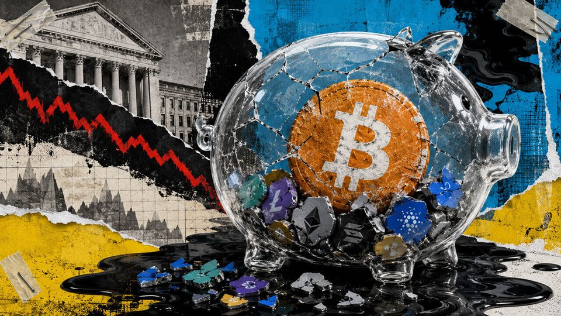
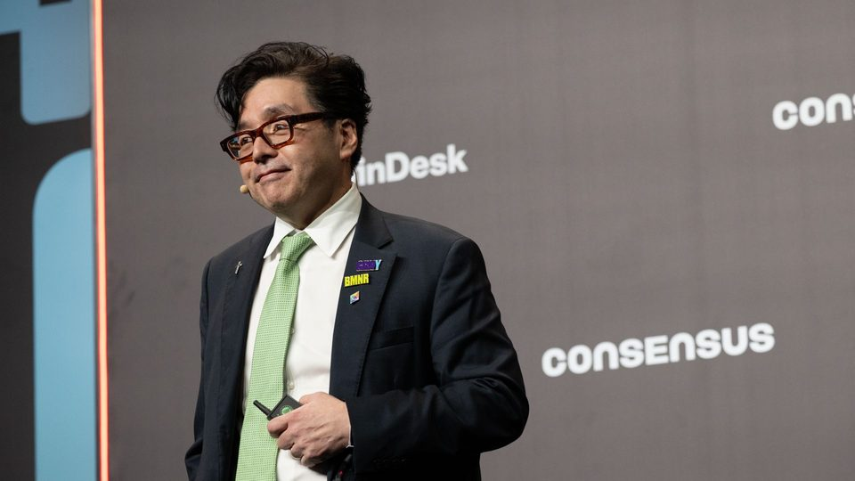
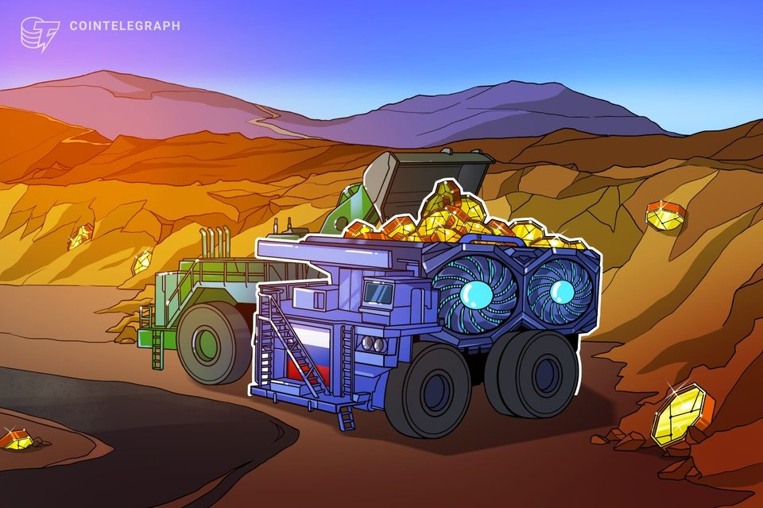
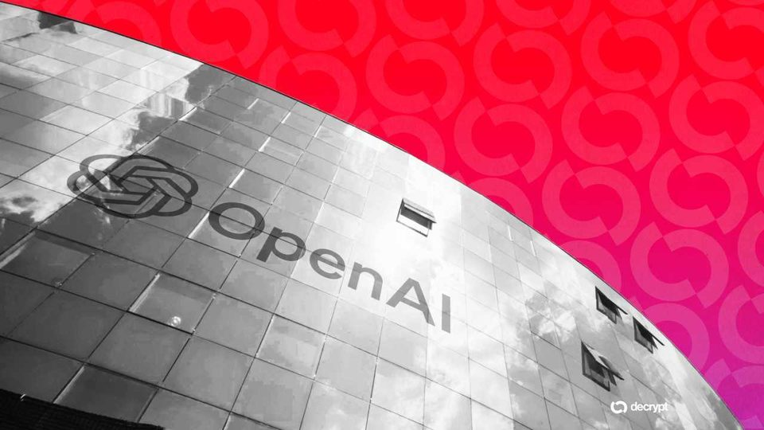
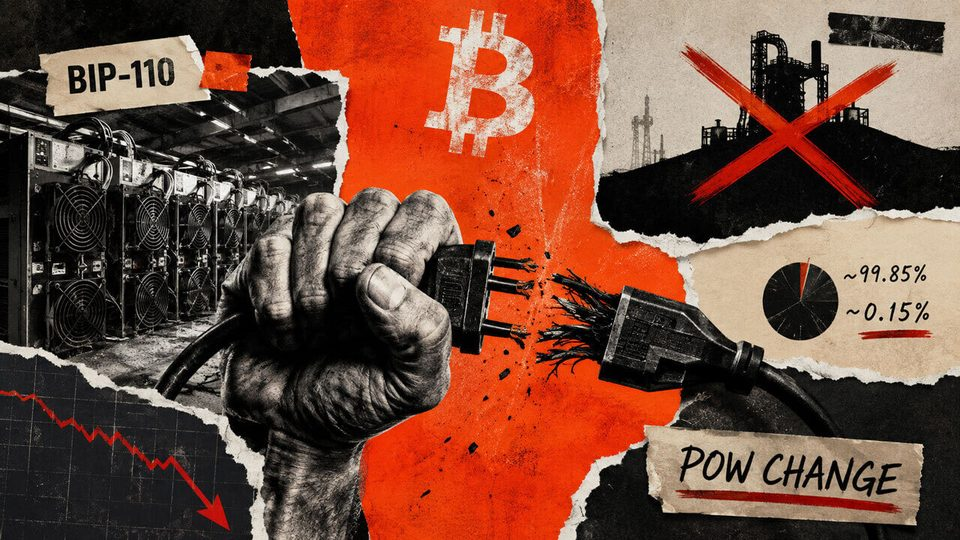
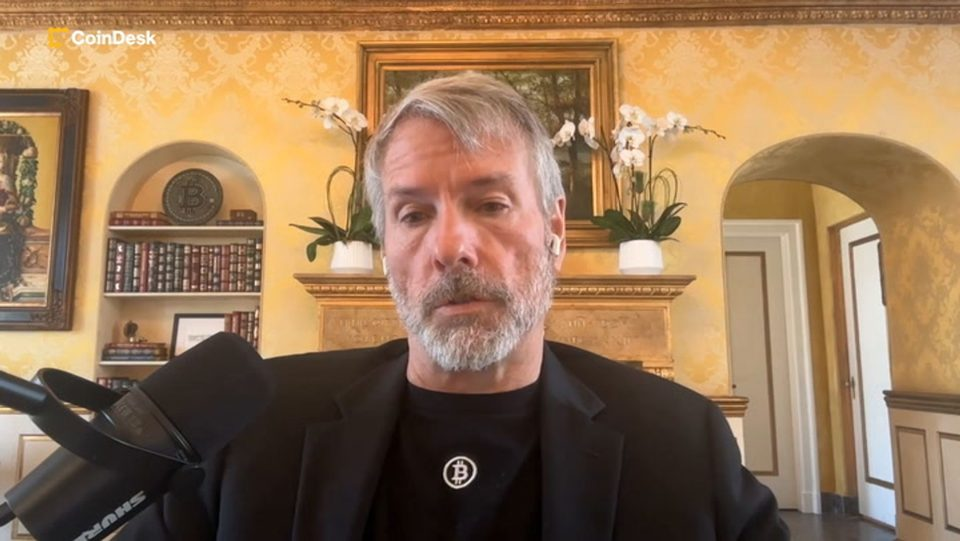
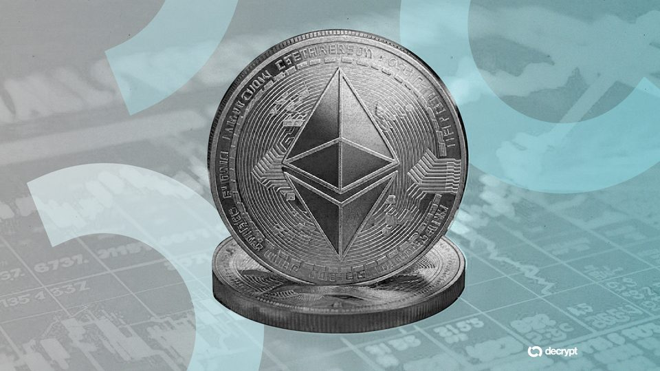
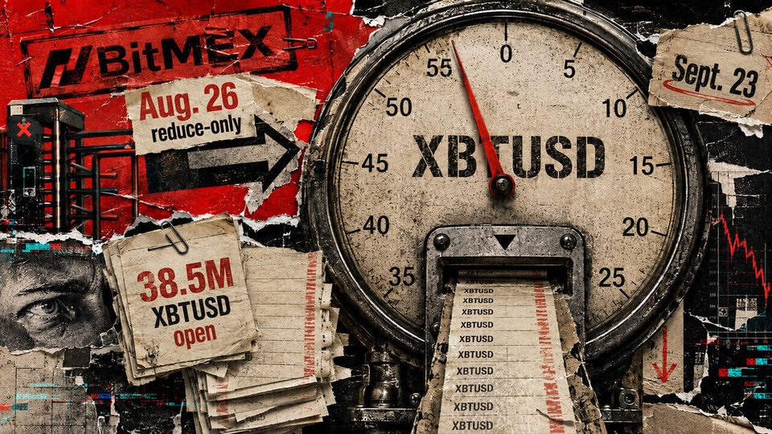
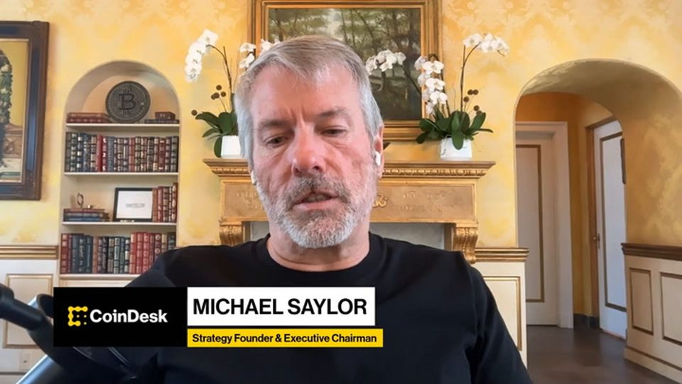
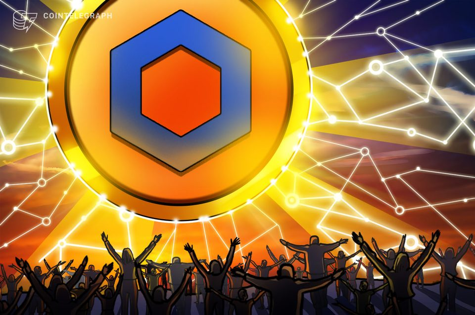

August 10, 2026
Daily headline set with source diversity, cleaned links, and local static rendering.
Hackers Drain $8 Million From Crypto Exchange Across Two Blockchains
The attacker moved funds across Tron and Ethereum before routing millions through crypto exchanges, while later wallet activity offers clues about how the breach occurred.

Bitwise pitched a diversified 10-crypto fund, then lost $500 million as Bitcoin swallowed 78% of the portfolio
Market losses and net redemptions cut the fund to $532.8 million while Bitcoin’s portfolio share rose to 77.81%. The post Bitwise pitched a diversified 10-crypto fund, then lost $500 million as Bitcoin swallowed 78% of...

Bitmine's ETH buying slows as Tom Lee's firm shifts capital to share buybacks
Bitmine's ETH buying slows as Tom Lee's firm shifts capital to share buybacks

Bitdeer increased Bitcoin mining output by nearly fivefold in Q2
Bitdeer mined 2,694 BTC in Q2, but ended the quarter holding just 150 BTC after liquidating its treasury earlier this year.

OpenAI Says Its Next AI Model Astra May Be Too Dangerous, Pauses Development
OpenAI says its next major model may be dangerous enough to write its own cyberweapons, and it's pulling back until the safeguards catch up.

Bitcoin's BIP-110 fork is back, but its backers want to replace the miners and change PoW
Bitcoin’s BIP-110 push failed to gain meaningful mining support over the weekend, leaving the proposal stranded on a minority chain that produced only two blocks before stalling at height 961,633. The soft fork was...

Solana gets its first Strategy STRC product through Solstice Finance
Solana gets its first Strategy STRC product through Solstice Finance
Strategy turns 1,690 BTC into $108.6M STRC buyback
Strategy sold 1,690 Bitcoin to repurchase STRC shares as its US dollar reserve rose to $4.65 billion and its Bitcoin holdings fell to 840,447 BTC.

Tom Lee's Bitmine Buys $14M in Ethereum as Cash Falls to $104M
Bitmine has reported 4.8% of the supply for five straight weeks, leaving its 'Alchemy of 5%' target roughly 230,000 tokens away.

Traders holding $39.5 million in BitMEX Bitcoin perps have 16 days to exit before forced closures begin
New positions stop Aug. 26, while contracts left open face a wind-down that ends in forced closure Sept. 23. The post Traders holding $39.5 million in BitMEX Bitcoin perps have 16 days to exit before forced closures...

Strategy sells 1,690 bitcoin, raises $653 million from MSTR shares
Strategy sells 1,690 bitcoin, raises $653 million from MSTR shares

Tokenized RWA surge to $4T may push LINK to $200 by end-2030: Standard Chartered
The LINK token may see a 25-fold increase to $200 by the end of 2030, as the growing real world asset market increases demand for the industry’s largest oracle services provider, according to Standard Chartered.